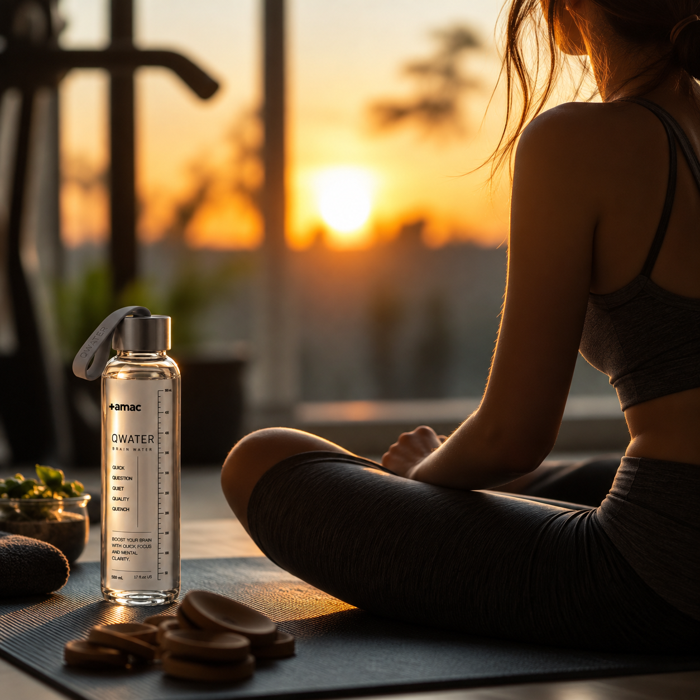
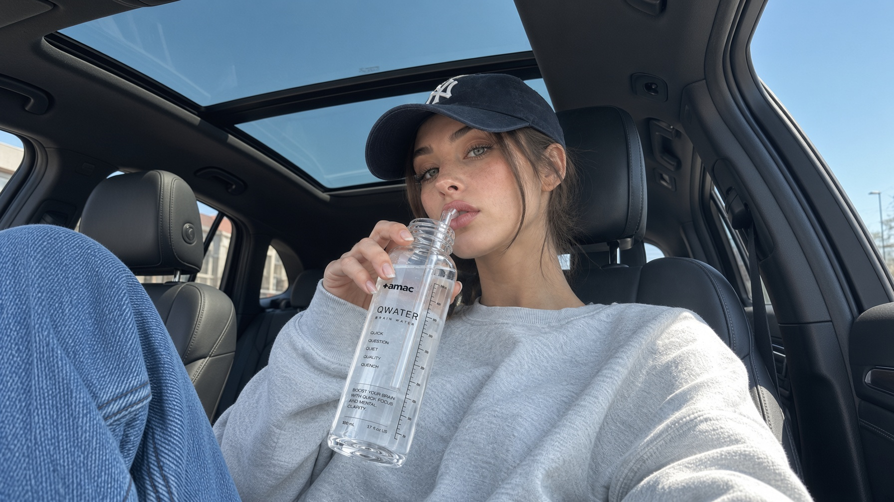
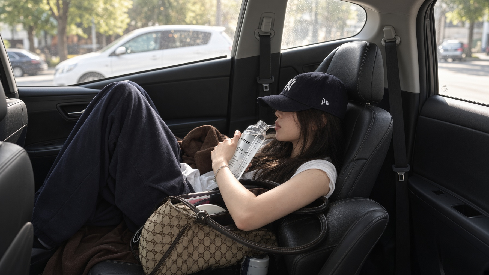
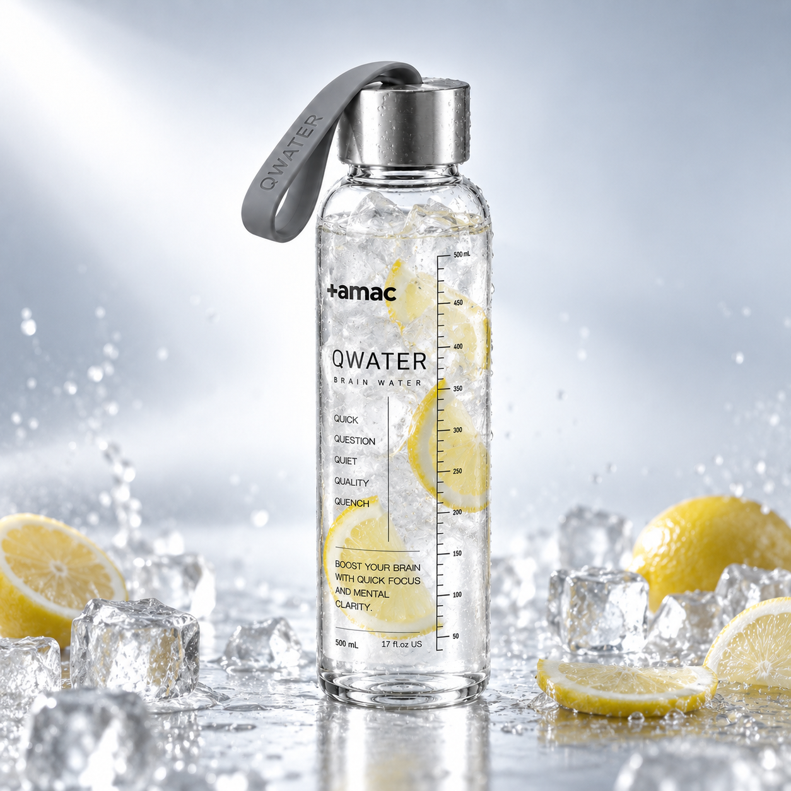
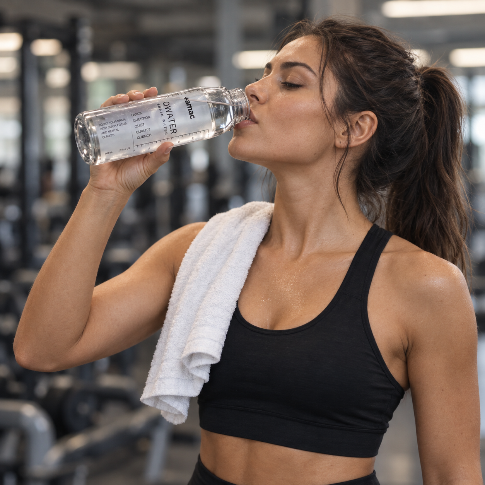
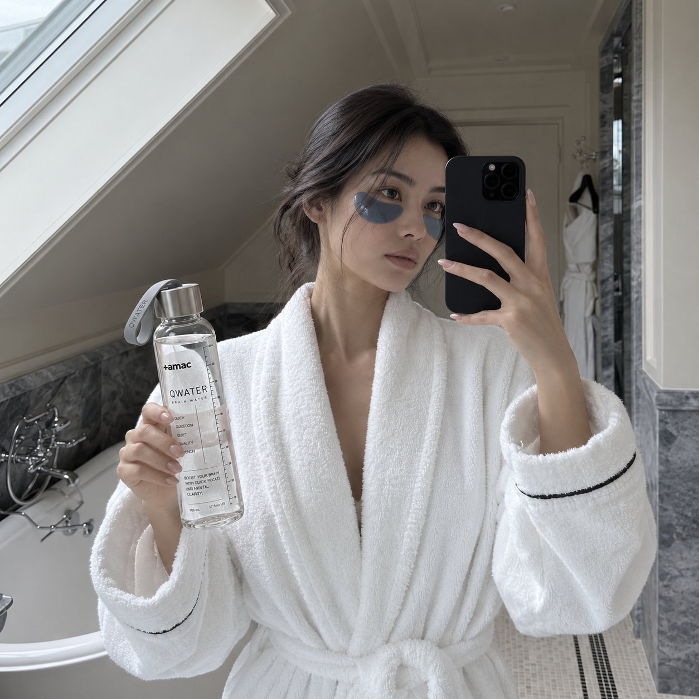
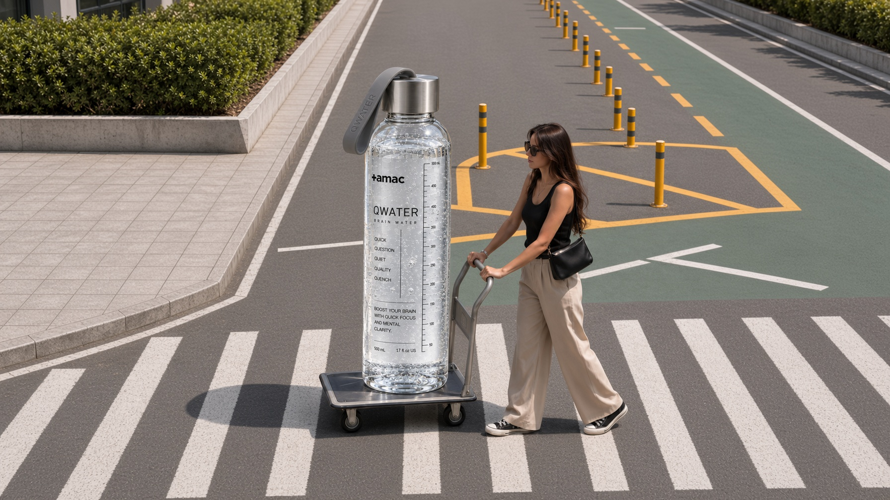

THE FIRST 30
MINUTES MATTER.
업무가 시작되는 시간보다 내가 시작되는 시간이 먼저입니다.
첫 메일을 열기 전에 오늘의 상태부터 정하십시오.
Q1은 일의 시작점을 분명하게 만드는 낮의 루틴입니다.
Before work begins, you have to begin.
Before opening the first email, decide how you want to enter the day.
Q1 is a daytime ritual designed to make the starting point clear.

FOR DAYS WITH
TOO MUCH TO DO.
일정이 많다고 집중력이 자동으로 생기지는 않습니다.
중요한 것은 가장 먼저 무엇에 에너지를 쓸지 정하는 것입니다.
Q1은 바쁜 하루를 시작하기 위한 물입니다.
A full schedule does not automatically create focus.
What matters is deciding where your energy goes first.
Q1 is water designed for the beginning of a demanding day.

WHEN THE MEETINGS
DON'T STOP.
사람을 만나고, 듣고, 판단하고, 다시 결정해야 하는 날이 있습니다.
그런 날일수록 무작정 자극을 더하기보다 일정한 시작 루틴이 필요합니다.
Q1을 하루의 첫 기준점으로 두십시오.
Some days demand constant listening, thinking, judging and deciding.
On those days, you may need a consistent starting ritual more than another hit of stimulation.
Make Q1 your first reference point of the day.

CREATE A STARTING
POINT FOR FOCUS.
몰입은 우연히 찾아올 때도 있지만 기다릴 필요는 없습니다.
같은 장소, 같은 시간, 같은 행동은 집중을 시작하는 강력한 환경 신호가 됩니다.
물을 따르고 Q1을 넣는 순간을 시작점으로 만드십시오.
Focus sometimes arrives on its own. You do not have to wait for it.
The same place, the same time and the same action can become a powerful environmental cue.
Let the moment you add Q1 to water become your starting point.

DON'T JUST ARRIVE.
SWITCH ON.
회사에 도착했다고 내가 준비된 것은 아닙니다.
컴퓨터를 켜듯 나만의 업무 시작 동작이 필요합니다.
Q1은 그 시동을 단순하게 만듭니다.
Arriving at work does not mean you are ready to work.
Just as you switch on your computer, create a deliberate action that starts your work mode.
Q1 makes that action simple.

MAKE IT YOUR
FIRST BOTTLE.
첫 번째 물병에 무엇을 넣느냐가 하루의 반복을 만듭니다.
커피 한 잔을 추가하기 전에 먼저 물을 채우십시오.
Q1을 오전 루틴의 첫 병으로 정의합니다.
What goes into your first bottle can shape the rhythm that follows.
Before adding another coffee, fill your water first.
Make Q1 the first bottle of your morning routine.

BEFORE
ANOTHER COFFEE.
오늘 카페인을 얼마나 마셨는지 알고 계십니까.
Q1은 카페인 함량을 감추지 않고 숫자로 공개합니다.
자극을 늘리는 것이 아니라 관리하는 방식입니다.
Do you know how much caffeine you have consumed today?
Q1 does not hide its caffeine content. We put the number on the label.
The point is not more stimulation. It is better control.

DESIGN YOUR
DAYTIME RHYTHM.
집중은 하루 종일 동일하게 유지되지 않습니다.
그래서 중요한 일에 사용할 시간을 먼저 확보하는 사람이 유리합니다.
Q1은 중요한 시간의 앞에 놓이는 제품입니다.
Focus does not stay constant throughout the day.
People who protect time for important work have an advantage.
Q1 is designed to sit immediately before that time.